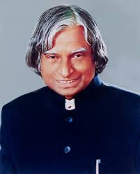

Article 1
“A Man Beyond Science”
Dear Sir,
The extraordinary charismatic personality of Dr. Kalam has sensitized every individual in our nation. His reach to the people was beyond the bar of caste, color and creed. An ordinary man, who came from a humble family of Rameswaram, Tamil Nadu, India, reached to the highest national rank by being the 11th President in Indian Republic. He has been a very sincere worker of his field and was a continuous source of inspiration for all generation of people. Among the awards which he deservingly earned in his lifetime, few of them include Padambhushan (1981), Padma Vibushan (1990), Bharat Ratna (1997) King Charles Medal-II (2007) and many more.
Article2

Early life and career
Kalam was born in a town in Tamil Nadu state to a fishing boat owner from a once wealthy family. The youngest of five siblings, Kalam persevered with his education despite his impoverished circumstances. He earned a degree in aeronautical engineering from the Madras Institute of Technology and in 1958 joined the Defence Research and Development Organisation (DRDO). In 1969 he moved to the Indian Space Research Organisation (ISRO), where he was project director of the SLV-III, the first satellite launch vehicle that was both designed and produced in India. In 1980 SLV-III successfully released a satellite called Rohini into near-Earth orbit, taking India’s space program to the international stage. Kalam oversaw further development of launch vehicle technologies at ISRO, including the Polar Satellite Launch Vehicle.